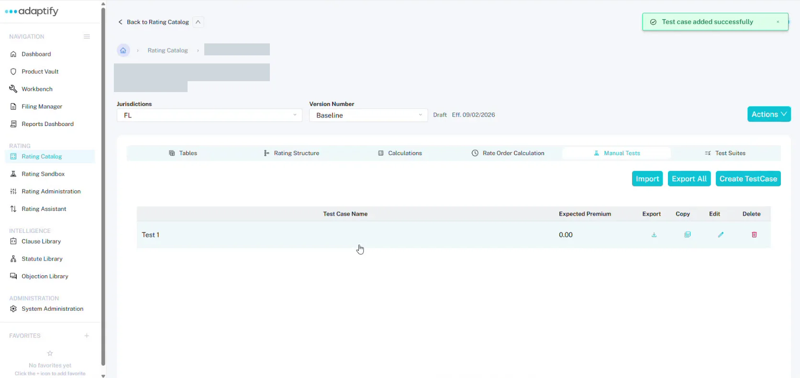
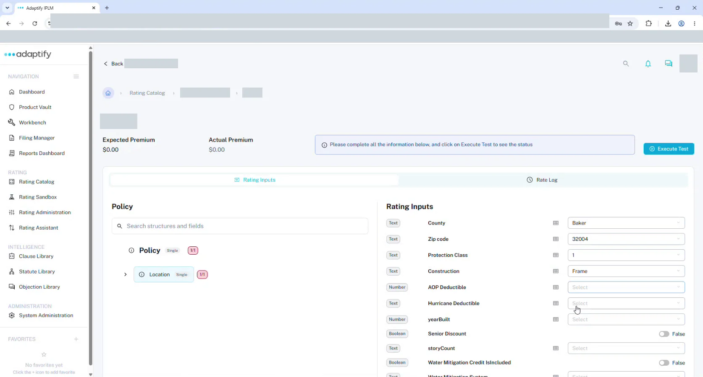
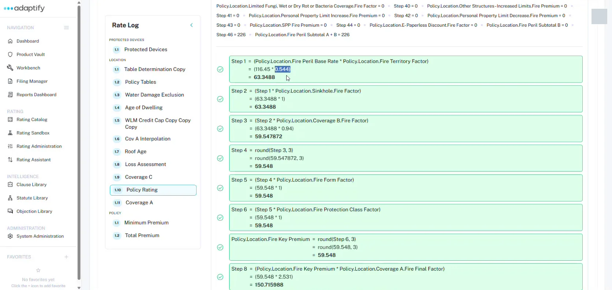

Rating
Test a rater¶
Test a rater by entering rating inputs and comparing the premium Adaptify works out with the premium you expect.
Create a test case¶
- Open the rater and choose the Manual Tests tab.
- Select Create TestCase.
- In Add New Manual Test, enter the Test Case Name and the Expected Premium, then select + Add Test. You'll see "Test case added successfully".
The list shows each test's Test Case Name and Expected Premium, with Export, Copy, Edit and Delete. You can also Import test cases, or Export All.

Run a test¶
- Open the test case. You'll see the Expected Premium and Actual Premium.
- On Rating Inputs, fill in the inputs. These are the fields marked as rating inputs in the structure, in sequence-number order. Use the Policy tree on the left to move between risk items.
- Select Execute Test. A message tells you whether the test passed, with the premium.
If a required input is missing, the test fails. Fill it in and run the test again.

Read the Rate Log¶
Choose Rate Log to follow the math step by step. It's the quickest way to find out why a premium is off.
- The list on the left shows each calculation in rate order, grouped by risk item.
- For each table lookup, you see the Input and Output: the field, its path and its value.
- For each calculation, you see each step with the numbers filled in and its result.
- For each branch, you see the IF, THEN and ELSE, with the path that was taken.
Use the filters at the top, such as Risk Item, Coverage and Node Type, to narrow the log.

Test suites¶
To run many test cases at once, use the Test Suites tab. It has Download Template, Create Test Suite and Import with Template. Each suite shows its Name, how many tests Passed and Failed, the File, Last Run and Status.